![]()
library(ggplot2)
library(ggrepel)
library(RColorBrewer)
library(data.table)
devtools::load_all("~/data/dan/imputation_smoothing/smiSmooth")
sem <- readRDS("~/data/dan/imputation_smoothing/colondata/semsub.rds")
normed <- smiSmooth::totalcount_norm(Matrix::t(sem[["RNA"]]@counts))
sem <- Seurat::SetAssayData(sem, layer = "data", new.data = Matrix::t(normed))1 Introduction
With spatially-resolved transcriptomics (SRT) data, a number of factors can contribute to challenges in a cell typing analysis and hinder our ability to visualize our favorite marker genes. For example, these factors may include lower sensitivity compared to scRNAseq data, background due to autoflourescence, and segmentation error. This post demonstrates a cell typing method designed to make it easy to enforce prior biological assumptions about the marker genes and expression profiles we expect to see, while being robust to platform or batch effects that may otherwise challenge the transfer of those assumptions from pre-trained models or reference datasets.
We’ll use a 6k-plex colon cancer dataset to work through two common cell typing scenarios in which we envision this methodology can be useful:
- Subclustering an existing set of cell types
- In this first case, we’ll assume we’ve already done some basic clustering, but don’t quite have the level of cell type granularity we’d like. We’ll take a ‘T cell’ cluster and sub-classify those cells into CD8-T, CD4-T, and T-reg cell categories.
- Top down hierarchical cell typing with focus on immune cells:
- Here we’ll start from scratch; first assigning cells into major categories and identifying immune cells, then classifying those immune cells into various sub classifications of myeloid and lymphocyte cell types.
To set the stage, we can describe the basic framework we’ll use for both scenarios in a few basic steps (we’ll describe each of these steps in more detail throughout our examples.)
- First, for each cell type, we define a set of genes we expect might to be ‘marker genes’ or highly expressed based on prior data or biology (either the literature, a reference dataset, or some combination of both).
- Next, we construct metagene scores from our data for each cell type based on the genes specified in (1).
- Finally, we model the metagene scores, where the model estimates a posterior probability that each cell belongs to any of the possible cell types.
Let’s start by taking an initial look at our data, then walk through some cell typing scenarios. The tools we discuss throughout this post are available in the R package XX
2 Initial look at our dataset
First, we can load in our data and take a look at some unsupervised leiden clustering we’ve already performed.
2.0.0.1 Spatial plot of initial clusters
Here’s a spatial plot of our leiden clusters. At first glance, we see that some of these unsupervised clusters (i.e., 3, 0, 1, 2, and 7 for example) have distinct spatial patterns; it definitely looks like some meaningful biological structure in these tissue were captured by unsupervised clustering.
Code
sem@meta.data$portion <- "part_a"
sem@meta.data$portion[sem@meta.data$fov %in% 60:73] <- "part_b"
xyplist <-
lapply(split(data.table(sem@meta.data), by = "portion"), function(xx){
smiSmooth::xyplot("clusters_unsup", metadata = xx,ptsize = 0.1) + coord_fixed()
})
xypl <-
cowplot::plot_grid(plotlist=xyplist, nrow=1) +
theme(plot.background = element_rect(fill = 'white',color='white')) +
cowplot::panel_border(remove=TRUE)
print(xypl)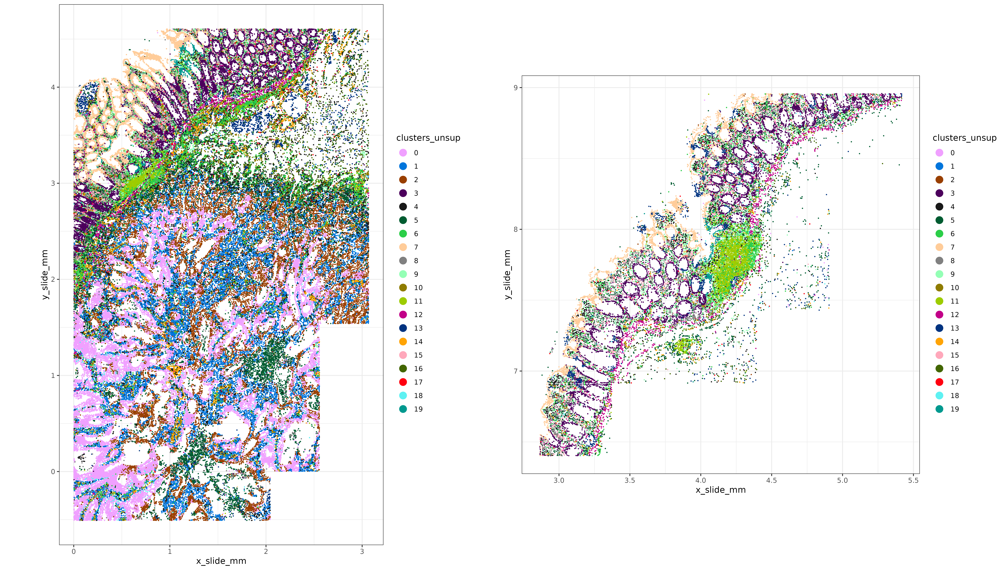
2.0.0.2 Heatmap of initial clusters
We can make a marker gene heatmap to identify some of the top marker genes for each cluster and see if we recognize any of the celltypes represented by the unsupervised clusters. Here we can use a couple of convenience functions provided in the R package XX.
Code
fctbl_unsup <-
smiSmooth::clusterwise_foldchange_metrics(normed = sem[["RNA"]]@data
,metadata = sem@meta.data
,clustercol = "clusters_unsup"
)
hm_unsup <- smiSmooth::marker_heatmap(fctbl_unsup
,extras = c("CD3D", "CD4", "FOXP3"
, "CD8B", "CD8A")
)
print(hm_unsup)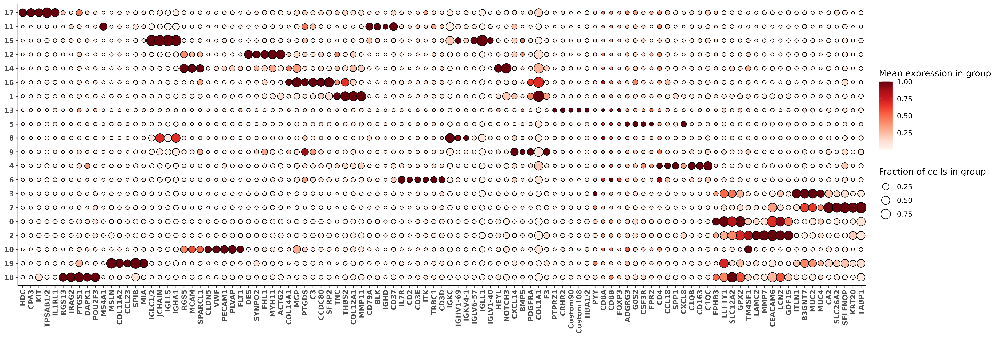
Let’s suppose for sake of demonstration that I recognize (and am comfortable enough) to label these clusters with cell type names based on the marker genes shown in the heatmap.
However, there are one or a few of my immune clusters I’ve identified where I desire more granularity. In this case, I’m particularly interested in my T cells; in the bottom-left hand corner of the heatmap plot above, I see that ‘cluster 6’ is capturing T-cells, showing enrichment in some key marker genes like CD3 (CD3D, CD3E) as well as other markers like CD2, IL7R, and ITK.
I’d like to split these cells further into at least a few meaningful T-cell subtypes, at minimum: “CD8+”, “CD4+”, and “Treg”.
3 Example case 1: Subclustering T cells
3.1 TL;DR ‘just the code’
Here’s the code for classifying leiden cluster ‘6’ into cd8t, cd4t, and treg cell types using the R package XXX.
### List of genes used to estimate a celltype-metagene score for each cell
data("markerslist_tcellmajor")
str(markerslist_tcellmajor)List of 3
$ cd4t:List of 3
..$ index_marker: chr "CD4"
..$ predictors : chr [1:81] "CD40LG" "IL2" "CCR7" "CXCR3" ...
..$ signs : num [1:81] 1 1 1 1 1 1 1 1 1 1 ...
$ cd8t:List of 3
..$ index_marker: chr "CD8B"
..$ predictors : chr [1:81] "CD8A" "PRF1" "GZMB" "GZMA" ...
..$ signs : num [1:81] 1 1 1 1 1 1 1 1 1 1 ...
$ treg:List of 3
..$ index_marker: chr "FOXP3"
..$ predictors : chr [1:81] "IL2RA" "CTLA4" "CD25" "CD73" ...
..$ signs : num [1:81] 1 1 1 1 1 1 1 1 1 1 ...### these are cells I want to subcluster
tcell_ids <- sem@meta.data[sem@meta.data$clusters_unsup==6,"cell_ID"]
### Fit the metagene score, using the counts matrix and a
### neighborhood 'adjacency' matrix indicating cells with similar expression profiles
metagenes_t <-
smiSmooth::fit_metagene_scores(
markerslist = markerslist_tcellmajor
,counts_matrix = Matrix::t(sem[["RNA"]]@counts[,tcell_ids])
,adjacency_matrix = as(sem@graphs$umapgrph
,"CsparseMatrix")[tcell_ids,tcell_ids]
)
### Fit a model clustering these metagene scores and
### predicting posterior probabilities each cell belongs
### to 'cd8t', 'cd4t', or 'treg'
model_t <-
smiSmooth::cluster_metagenes(metagenes = metagenes_t)The data table post_probs in our model object model_t gives the cell typing result; showing a posterior probability that each of our cells belongs to either cd8t, cd4t, or treg categories, along with a ‘best_class’ label dependending on which of these scores is highest for each cell.
model_t$post_probs[1:10][] cell_ID best_class best_score cd4t cd8t treg
<char> <char> <num> <num> <num> <num>
1: c_1_12_1066 cd4t 0.6821373 6.821373e-01 1.275213e-01 1.903413e-01
2: c_1_12_1175 treg 0.7200056 2.779893e-06 2.799916e-01 7.200056e-01
3: c_1_12_1270 cd8t 0.9995983 5.011867e-13 9.995983e-01 4.016523e-04
4: c_1_12_1349 treg 0.8193079 8.111962e-06 1.806840e-01 8.193079e-01
5: c_1_12_1394 cd8t 0.9999835 3.994840e-12 9.999835e-01 1.646823e-05
6: c_1_12_172 treg 0.9987074 8.775440e-06 1.283857e-03 9.987074e-01
7: c_1_12_228 cd4t 0.8087958 8.087958e-01 1.073259e-01 8.387832e-02
8: c_1_12_246 treg 0.9998951 1.005190e-04 4.352411e-06 9.998951e-01
9: c_1_12_285 cd4t 0.6117163 6.117163e-01 6.302002e-02 3.252637e-01
10: c_1_12_511 treg 0.9946729 7.593944e-04 4.567674e-03 9.946729e-01Now lets take a closer look at the details and describe the methodology for each step.
3.2 Detailed walkthrough
3.2.1 Part 1: Specifying genes associated with my cell types based on prior biology
Creating a marker list, by specifying genes I expect might be associated with my cell types is the first step of this algorithm. For each of my cell types, cd4t, cd8t, and treg, I specify
- a primary marker or “index gene”
- a set of other marker genes which I expect could be expressed as “predictors”
In this case, we’ll use CD4, CD8B, and FOXP3 as “index genes” for cd4t, cd8t, and treg respectively. The other genes we’ll specify as predictors are based on the literature. For example, IL2RA is often associated with Treg cells, so we include it as a predictor here.
It’s okay to include markers in multiple cell types if that fits our mental model. For example, treg cells are actually a subcategory of cd4t, so I’ve included ‘CD4’ as a predictor for treg and also as the index gene for cd4t. Similarly, ‘CCR7’ is used as a predictor in both cd8t and cd4t cell types, and ‘CXCR3’ is used as a predictor for all three cell types.
We can create our marker list manually like this:
tcell_markerslist <-
smiSmooth::make_markerslist(index_marker = list(cd4t = "CD4"
,cd8t = "CD8B"
,treg = "FOXP3"
)
,predictors = list(
cd4t = c('CD4','CD40LG','IL2','CCR7','CXCR3','CXCR4','SELL'
,'IL7R','CD28','STAT5B','STAT3','IKZF1','GATA3'
,'RUNX3','FOXP1')
,cd8t = c('CD8A','CD8B','PRF1','GZMB','GZMA','GZMH','GNLY'
,'IFNG','CCR7','SELL','CD44'
,'LAG3','KLRD1','CXCR3','ITGA1','RUNX3')
,treg =c('FOXP3','IL2RA','CTLA4','TIGIT','LAG3','IKZF2'
,'CCR4','CCL22','CD44','IL10','TGFB1','PDCD1'
,'BATF','STAT3','STAT1','CD274','PDCD1LG2'
,'EOMES','CXCR3','CXCR5','BCL6','HLA-DRA'
,'IRF4','TOX','SELL','CD69','ITGAE','KLRG1'
,'CD38','TNFRSF9','TNFRSF18','LRRC32','ICOS'
,'IL1R2','IL10RA','CCR6','AHR','NRP1','MKI67'
,'FAS','ENTPD1','TNFRSF25','ADORA2A','CD4'
)
)
,use_offclass_markers_as_negative_predictors = TRUE
)The object created looks like this below
str(tcell_markerslist)List of 3
$ cd4t:List of 3
..$ index_marker: chr "CD4"
..$ predictors : chr [1:64] "CD40LG" "IL2" "CCR7" "CXCR3" ...
..$ signs : num [1:64] 1 1 1 1 1 1 1 1 1 1 ...
$ cd8t:List of 3
..$ index_marker: chr "CD8B"
..$ predictors : chr [1:64] "CD8A" "PRF1" "GZMB" "GZMA" ...
..$ signs : num [1:64] 1 1 1 1 1 1 1 1 1 1 ...
$ treg:List of 3
..$ index_marker: chr "FOXP3"
..$ predictors : chr [1:64] "IL2RA" "CTLA4" "TIGIT" "LAG3" ...
..$ signs : num [1:64] 1 1 1 1 1 1 1 1 1 1 ...In practice, we can save and reuse our marker lists for different cell types. While it should be easy to create/modify a custom list from the literature, this particular list is included as a package dataset markerslist_tcellmajor to facilitate ease of use.
data("markerslist_tcellmajor")
str(markerslist_tcellmajor)List of 3
$ cd4t:List of 3
..$ index_marker: chr "CD4"
..$ predictors : chr [1:81] "CD40LG" "IL2" "CCR7" "CXCR3" ...
..$ signs : num [1:81] 1 1 1 1 1 1 1 1 1 1 ...
$ cd8t:List of 3
..$ index_marker: chr "CD8B"
..$ predictors : chr [1:81] "CD8A" "PRF1" "GZMB" "GZMA" ...
..$ signs : num [1:81] 1 1 1 1 1 1 1 1 1 1 ...
$ treg:List of 3
..$ index_marker: chr "FOXP3"
..$ predictors : chr [1:81] "IL2RA" "CTLA4" "CD25" "CD73" ...
..$ signs : num [1:81] 1 1 1 1 1 1 1 1 1 1 ...3.2.2 Part 2: Estimating a metagene score for each cell type
In this next step, we fit a model for each cell type, using the primary index marker as the response variable and covariates derived from the predictor genes.
We fit our models for each cell type class using the fit_metagene_scores function. This function uses ‘smoothing’, as well as our prior biology / assumptions about which markers are associated with each celltype to predict the pearson residuals of the index gene.
The default regression model setup looks like this: \[Y = WY\eta + WX\beta + X\gamma + \epsilon \] where
- \(Y:=\) pearson residuals of the index marker (our response variable)
- \(X:=\) (totalcount-normalized) matrix of predictor genes
- \(W:=\) a cells \(\times\) cells neighborhood matrix, denoting cells with similar expression profiles.
- \(\eta\), \(\beta\), and \(\gamma\) are the regression coefficients associated with the ‘neighbor-averaged’ index gene, ‘neighbor-averaged’ predictor genes, and predictor genes within the cell respectively.
One way to think about this model specification could be as an implementation of a ‘smoothing model’, which leverages information across multiple dimensions:
- the index gene in similar cells (\(WY\))
- other expected marker genes (our predictor genes \(X\))
- other marker genes in similar cells (\(WX\))
We use a non-negative least squares (Slawski and Hein 2013) (NNLS) regression to estimate our models. The NNLS model enforces that all of the covariates based on predictor genes we specified must have positive regression coefficients (in practice we’ll observe that a number of regression coefficients may shrink to zero).
By specifying use_offclass_markers_as_negative_predictors = TRUE in the section above, we further assume that predictors for other celltypes that we haven’t listed can be used as negative predictors of our index gene. For example, genes like like “GZMA” and “GZMB”, which are markers associated with cd8t, will be assumed to be negative predictors of the other classes (cd4t and treg) where they are not listed.
Estimating this model from the dataset at hand rather than using a reference model could make this framework more robust to platform effects or batch effects compared to pre-trained models or reference profiles which used different technology or data with slightly different biology.
Because the model is only using genes we’ve specified in our ‘markers list’, we also have complete control over which genes influence the metagene scores, reducing the chance that noisy or irrelevant genes can have negative impact on our cell type classification.
Here I call the fit_metagene_scores function to estimate these models for cells corresponding to the unsupervised cluster I’ve identified to be T cells.
For the cells \(\times\) cells adjacency_matrix, I’ve used the nearest neighbor matrix in my Seurat object. This is the same graph that was used to generate my UMAP and my unsupervised leiden clusters. After fitting our regression models for each cell type, we’ll use the predicted scores as ‘metagenes’ that can be clustered in the next step.
tcell_ids <- sem@meta.data[sem@meta.data$clusters_unsup==6,"cell_ID"]
metagenes_t <-
fit_metagene_scores(
markerslist = tcell_markerlist
,counts_matrix = Matrix::t(sem[["RNA"]]@counts[,tcell_ids])
,adjacency_matrix = as(sem@graphs$umapgrph
,"CsparseMatrix")[tcell_ids,tcell_ids]
)The metagenes_t object we’ve created has an element for each celltype, including the regression coefficients (bhat), and predicted values we’ll use for clustering (yhat) for each cell and each cell type.
str(metagenes_t,max.level = 2)List of 3
$ cd4t:List of 5
..$ bhat : num [1:129, 1] 0.43858 0.00927 0 0 0.01564 ...
.. ..- attr(*, "dimnames")=List of 2
..$ yhat : Named num [1:7356] 0.185 -0.151 -0.243 -0.261 -0.308 ...
.. ..- attr(*, "names")= chr [1:7356] "c_1_12_1066" "c_1_12_1175" "c_1_12_1270" "c_1_12_1349" ...
..$ y : Named num [1:7356] -0.271 -0.235 -0.418 -0.27 -0.312 ...
.. ..- attr(*, "names")= chr [1:7356] "c_1_12_1066" "c_1_12_1175" "c_1_12_1270" "c_1_12_1349" ...
..$ ypost : Named num [1:7356] -0.155 -0.217 -0.363 -0.267 -0.31 ...
.. ..- attr(*, "names")= chr [1:7356] "c_1_12_1066" "c_1_12_1175" "c_1_12_1270" "c_1_12_1349" ...
..$ ypost_fit:List of 6
$ cd8t:List of 5
..$ bhat : num [1:129, 1] 0.1036 0.0762 0.0346 0.0122 0.0216 ...
.. ..- attr(*, "dimnames")=List of 2
..$ yhat : Named num [1:7356] 0.0788 0.0965 0.4198 0.0295 0.2275 ...
.. ..- attr(*, "names")= chr [1:7356] "c_1_12_1066" "c_1_12_1175" "c_1_12_1270" "c_1_12_1349" ...
..$ y : Named num [1:7356] -0.16 -0.137 3.362 -0.159 -0.186 ...
.. ..- attr(*, "names")= chr [1:7356] "c_1_12_1066" "c_1_12_1175" "c_1_12_1270" "c_1_12_1349" ...
..$ ypost : Named num [1:7356] -0.08 -0.0478 1.2171 -0.1294 0.0593 ...
.. ..- attr(*, "names")= chr [1:7356] "c_1_12_1066" "c_1_12_1175" "c_1_12_1270" "c_1_12_1349" ...
..$ ypost_fit:List of 6
$ treg:List of 5
..$ bhat : num [1:129, 1] 0.2261 0.0253 0 0 0.0159 ...
.. ..- attr(*, "dimnames")=List of 2
..$ yhat : Named num [1:7356] 0.2155 0.3189 -0.0775 0.1038 -0.1911 ...
.. ..- attr(*, "names")= chr [1:7356] "c_1_12_1066" "c_1_12_1175" "c_1_12_1270" "c_1_12_1349" ...
..$ y : Named num [1:7356] -0.164 -0.141 -0.26 -0.163 -0.19 ...
.. ..- attr(*, "names")= chr [1:7356] "c_1_12_1066" "c_1_12_1175" "c_1_12_1270" "c_1_12_1349" ...
..$ ypost : Named num [1:7356] 0.0391 0.1491 -0.2065 -0.068 -0.1908 ...
.. ..- attr(*, "names")= chr [1:7356] "c_1_12_1066" "c_1_12_1175" "c_1_12_1270" "c_1_12_1349" ...
..$ ypost_fit:List of 6We can get a better understanding of the model output by looking at a few diagnostics plots. In the below, we plot the regression coefficients for each model, ordering them on the x-axis by their ranking. For each cell type, the positive \(\hat{\beta}\) correspond to genes we specified as predictors, and negative \(\hat{\beta}\) were predictors for either of the other two cell types.
A lot of the covariates which have the largest magnitudes have “lag.” in their name indicating they correspond to a smoothed (or neighbor-averaged) covariate for that gene.
For cd4t, we see that smoothed CD4 (indicated by ‘lag.y’ in the plot) is the strongest predictor of observed ‘CD4’. For cd8t and treg categories, ‘lag.y’ (indicating smoothed CD8B and FOXP3) are also among the strongest predictors, but not first in rank.
coefplots <- metagene_coefficients_plot(metagenes_t)
coefplots <- lapply(coefplots, function(x){x + theme(text=element_text(face='bold',size=18))
}) ## just make the text bigger and bold
cowplot::plot_grid(plotlist = coefplots, nrow = 1)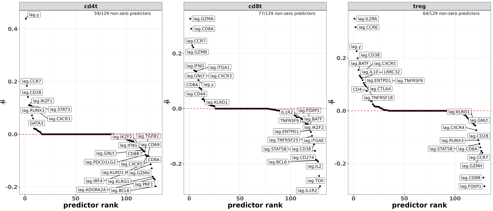
A pairsplot can show us how well the metagene scores we’ve created are distinct from each other. Ideally, if our cell type classes are mutually exclusive, we’d want to not see too many cells which are ‘positive’ for multiple cell types at the same time.
Here, we see that cd4t and treg scores are positively correlated. This isn’t too surprising, because T-reg cells are actually a subtype of CD4+ T cells. cd8t is somewhat negatively correlated with both treg and cd4t, which is good to see.
metagene_pairsplot(metagenes_t, var= "yhat")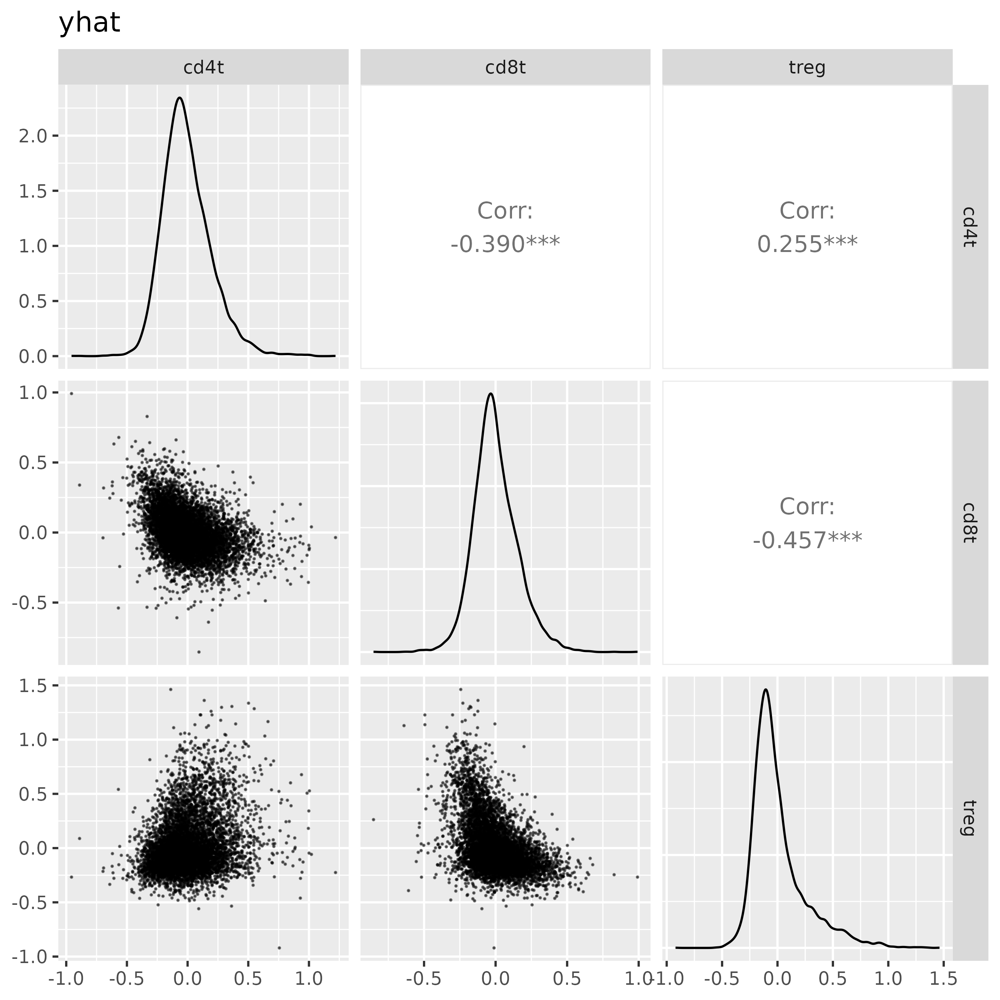
3.2.3 Part 3: Clustering via overfitted gaussian mixture-models
Finally, we will cluster these scores to infer the T cell types. The cluster_metagenes function we run below estimates a mixture of overfitted multivariate gaussian mixture models (Aragam et al. 2020) to estimate the distribution of metagene scores.
First, we identify all cells with positive metagene scores for a particular cell type. We might loosely interpret these cells as ‘anchor cells’. The data may look like this for example, where here I have subset my original data to cells which have positive scores for my celltype cd8t.
yh <- make_scores_matrix(metagenes = metagenes_t, "yhat")
yh[yh[,"cd8t"] > 0,][1:10,] cd4t cd8t treg
c_1_12_1066 0.1847288 0.07884436 0.21554716
c_1_12_1175 -0.1508325 0.09649730 0.31891480
c_1_12_1270 -0.2428137 0.41977522 -0.07745283
c_1_12_1349 -0.2612089 0.02947469 0.10376038
c_1_12_1394 -0.3083315 0.22750719 -0.19108263
c_1_12_228 0.4005858 0.07455475 0.08310462
c_1_12_629 -0.2639081 0.37108097 -0.12660932
c_1_13_1030 -0.2908676 0.42744055 -0.26561687
c_1_13_1457 -0.1565689 0.18462399 -0.18883989
c_1_13_1464 -0.3490420 0.29999403 -0.03196079Then, a mixture model is fit to these (3-dimensional) scores, by default using 6 components. The estimates corresponding to the individual mixture models for each cell type are found in the models list, with the means (mu_hat), covariance matrices (sigma_hat), and prior probability (pihat) corresponding to each mixture component.
str(model_t$models, max.level = 2)List of 3
$ cd4t:List of 6
..$ post_probs :Classes 'data.table' and 'data.frame': 1200 obs. of 9 variables:
.. ..- attr(*, ".internal.selfref")=<externalptr>
..$ pihat : Named num [1:6] 0.1512 0.0292 0.1744 0.1551 0.1763 ...
.. ..- attr(*, "names")= chr [1:6] "k1" "k2" "k3" "k4" ...
..$ llmat : num [1:1200, 1:6] -290.72 -15.59 -130.04 1.46 -6.45 ...
.. ..- attr(*, "dimnames")=List of 2
..$ mu_hat : num [1:6, 1:3] 0.0245 0.6208 0.1377 0.3379 0.0677 ...
.. ..- attr(*, "dimnames")=List of 2
..$ sigma_hat :List of 6
..$ loglik_iters: num [1:196] 3238 3260 3272 3280 3285 ...
$ cd8t:List of 6
..$ post_probs :Classes 'data.table' and 'data.frame': 1962 obs. of 9 variables:
.. ..- attr(*, ".internal.selfref")=<externalptr>
..$ pihat : Named num [1:6] 0.324 0.177 0.129 0.101 0.189 ...
.. ..- attr(*, "names")= chr [1:6] "k1" "k2" "k3" "k4" ...
..$ llmat : num [1:1962, 1:6] -12.32 1.38 -7 -12.29 3.15 ...
.. ..- attr(*, "dimnames")=List of 2
..$ mu_hat : num [1:6, 1:3] -0.204 -0.1118 -0.0565 -0.1215 -0.2312 ...
.. ..- attr(*, "dimnames")=List of 2
..$ sigma_hat :List of 6
..$ loglik_iters: num [1:97] 5190 5290 5341 5362 5373 ...
$ treg:List of 6
..$ post_probs :Classes 'data.table' and 'data.frame': 1020 obs. of 9 variables:
.. ..- attr(*, ".internal.selfref")=<externalptr>
..$ pihat : Named num [1:6] 0.333 0.1456 0.0936 0.1852 0.0201 ...
.. ..- attr(*, "names")= chr [1:6] "k1" "k2" "k3" "k4" ...
..$ llmat : num [1:1020, 1:6] -3.27 2.21 -4.84 1.81 -14.67 ...
.. ..- attr(*, "dimnames")=List of 2
..$ mu_hat : num [1:6, 1:3] -0.0965 0.1414 -0.1475 -0.1105 -0.0413 ...
.. ..- attr(*, "dimnames")=List of 2
..$ sigma_hat :List of 6
..$ loglik_iters: num [1:153] 2213 2235 2246 2253 2258 ...Typically we don’t need to interact with this part of the output. After the mixture models for each cell type are fitted, we can score all cells, and get an overall posterior probability that a cell belongs to any of the three major classes using Bayes rule.
Let \(y_c\) be the cell type category for cell \(c\), \(scores_c\) the corresponding metagene scores, and \(t\) denoting a possible cell ‘type’ or category (for \(t = 1,...,T\)).
We compute the overall posterior probability that \(y_c\) is a particular type \(t\), as
\[P(y_c = t | scores_c) = \frac{P(scores_c | y_c = t)P(y_c = t)}{\sum_{l=1}^T P(scores_c | y_c = l)P(y_c = l)}\]
Using the individual mixture models for a particular cell type with \(K\) mixture components, we have \[P(scores_c | y_c = t) = \sum_{j=1}^K P(scores_c | k=j, y_c = t) P(k=j | y_c = t)\]
The prior probability for a particular cell type class \(t\) can be estimated by counting the number of cells used to estimate the mixture model in each cell type, and computing a proportion amongst all possible cell type classes, i.e., \[P(y_c = t) = \frac{\sum_{c=1}^C I(scores_{c,t} > 0)}{\sum_{l=1}^T \sum_{c=1}^C I(scores_{c,l} > 0)}\]
3.2.3.1 Advanced control: setting preferences for behavior of multi-positive cells
While we expect metagene scores to be positive for cells in the corresponding cell type, and lower (in general) for other celltypes, there could be exceptions. For instance, in this example, we might expect that Treg cells have both high treg metagene scores AND high cd4t scores due to Treg being a subtype of CD4+ T cell.
On the other hand, we might not want to label a cell with the cd4t type if it has a high treg score (because in that case we’d prefer to call it a treg).
The way we implement this in XXX package is through the discourage_double_positive argument in the cluster_metagenes function. Using this argument below, we provide a list of cell types and the corresponding categories in which we want to discourage double positivity. With the default argument provided below, cells with positive cd4t metagene scores are first identified to fit the cd4t mixture model. Then, cells which also have positive posterior-scores for treg would be excluded from this training set.
Ultimately this has the effect of preferentially assigning cells which are positive for both cd4t and treg to the treg cell type class.
These particular settings for discourage_double_positive are provided as a default, so the model here is identical to the one we showed in the previous section.
model_t <-
smiSmooth::cluster_metagenes(metagenes = metagenes_t
,to_model = "yhat" ## default - use modeled scores for clustering
,discourage_double_positive = list("cd4t" = c("treg")) ## also a provided default.
# ## Discourage assignment of cells to 'cd4t' if they are also high in 'treg'.
# ## Assigning cells to 'treg' which are high in 'cd4t' is **not** discouraged.
)3.2.4 Examining and validating clustering results
Now we can evaluate the cell typing performance. In particular, we want to check that the genes we specified as the index marker and predictors are in fact marker genes in the corresponding cell types.
Here we can attach our T-cell annotations back onto our metadata, and remake our marker heatmap. We see that the primary marker genes have highest expression in the expected cell types. For example, CD8A and CD8B are highest in cd8t, FOXP3 is highest in treg, and CD4 is high in both cd4t and treg. Several other genes we’ve chosen to associate with these celltypes based on our tcell_markerslist object are also highest in the expected cell type (i.e., CTLA4 in treg cells, IL7R in cd4t).
met <-
merge(data.table(sem@meta.data), model_t$post_probs[,.(cell_ID, celltype, best_score)]
,by="cell_ID", all.x=TRUE)
met[is.na(celltype),celltype:=clusters_unsup]
fc_tcell <-
smiSmooth::clusterwise_foldchange_metrics(normed = sem[["RNA"]]@data
,metadata = met
,clustercol = "celltype"
)
hm_tcell <- smiSmooth::marker_heatmap(fc_tcell
,extras = c("CD3D", "CD4", "FOXP3", "CD8A", "CD8B", "GNLY", "GZMA", "IL2RA", "CTLA4", "TIGIT")
)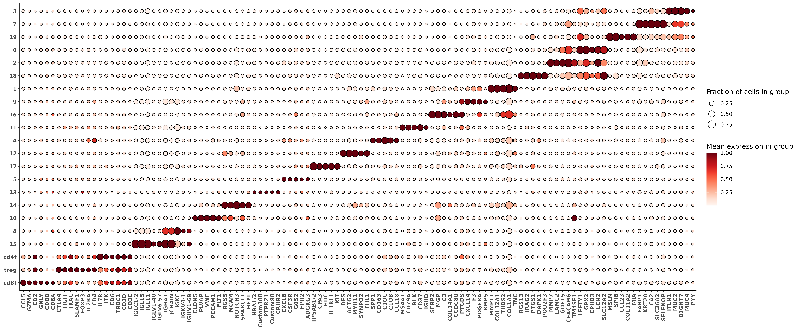
Treating the ‘posterior probability’ as a confidence that the cell belongs to the corresponding cluster, we can show that the proportion of cells that express the expected marker genes generally increases with higher confidence. In the plot below, for example, marker genes GZMA, GNLY, CD8B, CD8A (cd8t predictors) increase in cd8t cells with higher posterior probability. Marker genes TIGIT, CTLA4, IL2RA, and FOXP3 (treg predictors) also increase in treg cells with higher posterior probability.
IL7R and FOXP1 are highest in cd4t cells. CD4 is higher treg compared to cd4t, which is probably okay because we expect both types to be CD4+. Both cd4t and treg have higher observed CD4 relative to cd8t class.
p <-
marker_threshold_plot(normed = sem[["RNA"]]@data
,metadata = met
,clusters = c("cd8t","cd4t", "treg")
,markers = c("CD3D", "CD4", "CCR7","FOXP1", "IL7R", "FOXP3", "IL2RA", "CTLA4", "TIGIT","CD8A", "CD8B", "GNLY", "GZMA","CCL5")
,cluster_order = c("cd8t", "treg", "cd4t")
,thresholds = c(0.5, 0.7, 0.8, 0.9,0.95, 0.99, 0.995)
,score_column = "best_score"
)
p <- p + theme(text=element_text(size=14,face='bold')) +
labs(title = "Proportion of cells expressing marker gene increases with \nposterior probability confidence scores")
print(p)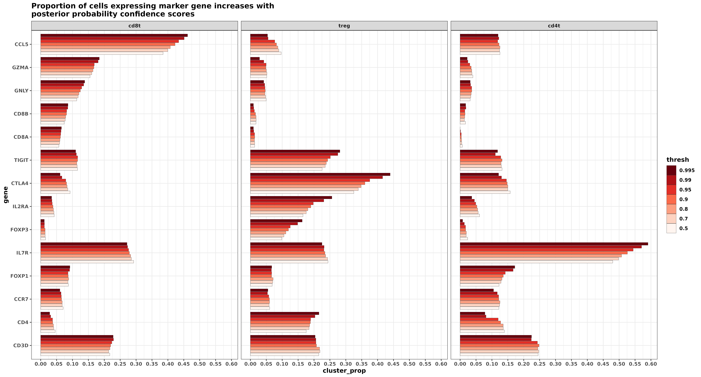
Here’s another look at the pairsplot for our metagene scores,this time coloring the cells based on their classification.
metagene_pairsplot(metagenes_t, "yhat", obs = model_t$post_probs[,.(cell_ID, best_class)], colorvar = "best_class")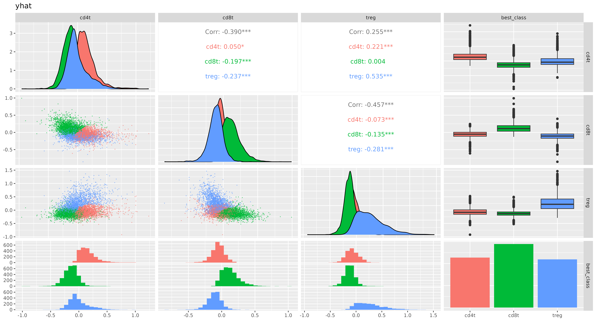
4 Example 2: Hierarchical cell typing
For the second example, we wish to ignore the unsupervised clustering and infer all cell types based entirely on the framework motivated here.
Using the full dataset, we’ll first infer amongst 5 major cell type categories [immune, epithelial, endothelial, fibroblast, plasma] in a similar fashion as described in our first example. Then, we’ll infer subtypes of the immune cell labels with categories including [tcell,bcell,macrophage,neutrophil,mast,monocyte,cDC,pDC].
4.1 TL;DR ‘just the code’
Here’s the code to produce the final set of cell types. The next section will cover the details and discuss a few choices that were made.
### Level-1
data("markerslist_l1io")
metagenes_l1 <-
fit_metagene_scores(markerslist_l1io
,counts_matrix = Matrix::t(sem[["RNA"]]@counts)
,adjacency_matrix = as(sem@graphs$umapgrph, "CsparseMatrix")
)
model_l1 <-
cluster_metagenes(metagenes = metagenes_l1
,to_model = "yhat"
,discourage_double_positive =
list("endothelial" = "immune" ### don't estimate components for
,"epithelial" = "immune" ### epithelial / endothelial / plasma / fibroblast
,"fibroblast" = "immune" ### using cells which have positive metagene scores for 'immune'
,"plasma" = c("immune", "fibroblast", "endothelial", "epithelial"))
)
### Level 2
data("markerslist_l2immune")
metagenes_l2 <-
fit_metagene_scores(markerslist_l2immune
,counts_matrix = Matrix::t(sem[["RNA"]]@counts)
,adjacency_matrix = as(sem@graphs$umapgrph, "CsparseMatrix")
,prior_level_weights = model_l1$post_probs$immune ## weight by probability a cell is an immune cell
)
model_l2_v2 <-
cluster_metagenes(metagenes = metagenes_l2
,to_model = "yhat"
,prior_prob_level = model_l1$post_probs$immune ## weight by probability cell is immune cell based on previous model
,discourage_double_positive = list("mast" = c("tcell"))
)### Final classifications, combining L1 and L2 cell types
probs <- merge(model_l1$post_probs, model_l2_v2$post_probs, suffixes=c("_l1", "_l2"), by = "cell_ID")
probs[,`:=`(celltype=best_class_l2, best_score=best_score_l2)]
probs[best_score_l2 < 0.5,`:=`(celltype=best_class_l1, best_score=best_score_l1)]
probs[best_class_l1 =="immune",`:=`(celltype=best_class_l2, best_score = best_score_l2)]
probs[best_score_l1 < 0.5,celltype:="unknown"]
probs[1:5][] ## peekKey: <cell_ID>
cell_ID best_class_l1 best_score_l1 endothelial fibroblast
<char> <char> <num> <num> <num>
1: c_1_12_1000 epithelial 0.9999998 2.236676e-07 2.591380e-09
2: c_1_12_1001 epithelial 1.0000000 2.890822e-15 4.237820e-15
3: c_1_12_1002 epithelial 1.0000000 3.711366e-12 5.058044e-10
4: c_1_12_1003 epithelial 1.0000000 4.512291e-22 8.007220e-16
5: c_1_12_1005 fibroblast 0.9483214 5.693726e-03 9.483214e-01
immune plasma epithelial celltype best_class_l2
<num> <num> <num> <char> <char>
1: 5.149746e-09 9.917935e-13 9.999998e-01 epithelial tcell
2: 5.592977e-15 1.568682e-21 1.000000e+00 epithelial tcell
3: 7.207797e-10 3.583505e-13 1.000000e+00 epithelial mast
4: 9.344377e-18 1.952417e-28 1.000000e+00 epithelial neutrophil
5: 4.598490e-02 1.475784e-18 3.865846e-09 fibroblast neutrophil
best_score_l2 tcell bcell macrophage neutrophil
<num> <num> <num> <num> <num>
1: 2.902998e-09 2.902998e-09 1.094323e-10 2.406744e-10 1.111151e-09
2: 4.165758e-15 4.165758e-15 4.682854e-17 2.240022e-16 1.404223e-16
3: 3.687460e-10 1.978209e-10 2.697895e-12 4.823298e-11 4.851792e-11
4: 4.216819e-18 2.434063e-18 5.703084e-19 9.621409e-20 4.216819e-18
5: 2.081132e-02 6.171010e-04 2.656161e-04 6.209344e-03 2.081132e-02
mast monocyte cDC pDC best_score
<num> <num> <num> <num> <num>
1: 1.480951e-10 1.882589e-10 1.133228e-10 3.358128e-10 0.9999998
2: 5.304669e-17 1.996270e-16 4.667790e-17 7.166141e-16 1.0000000
3: 3.687460e-10 6.612175e-12 2.645813e-11 2.169366e-11 1.0000000
4: 1.839526e-18 8.037984e-20 1.030334e-19 4.033468e-21 1.0000000
5: 9.792988e-03 5.409178e-03 2.595777e-03 2.835684e-04 0.9483214probs[,.N,by=.(celltype)][,prop:=N/sum(N)][order(-N)][] ## proportion of called cells by cell type celltype N prop
<char> <int> <num>
1: epithelial 45126 0.39989012
2: fibroblast 22111 0.19593960
3: endothelial 10773 0.09546639
4: plasma 7518 0.06662177
5: tcell 6910 0.06123389
6: monocyte 4672 0.04140156
7: macrophage 3761 0.03332861
8: bcell 3255 0.02884462
9: unknown 2366 0.02096663
10: neutrophil 2059 0.01824611
11: pDC 1597 0.01415203
12: mast 1452 0.01286709
13: cDC 1246 0.011041604.2 Detailed walkthrough
4.2.1 Level 1: identifying immune cells, and other major celltypes
We’ll start with trying to identify major cell types (endothelial, fibroblast, plasma, immune, epithelial). Here we use the markerslist provided in the package, giving genes we believe to be associated with our high-level cell type categories.
data("markerslist_l1io")
str(markerslist_l1io)List of 5
$ endothelial:List of 3
..$ index_marker: chr "PECAM1"
..$ predictors : chr [1:370] "VWF" "PLVAP" "CDH5" "TEK" ...
..$ signs : num [1:370] 1 1 1 1 1 1 1 1 1 1 ...
$ fibroblast :List of 3
..$ index_marker: chr "COL1A2"
..$ predictors : chr [1:370] "VIM" "S100A4" "PDGFRB" "PDGFRA" ...
..$ signs : num [1:370] 1 1 1 1 1 1 1 1 1 1 ...
$ immune :List of 3
..$ index_marker: chr "PTPRC"
..$ predictors : chr [1:370] "CD3E" "CD3D" "CD4" "CD8A" ...
..$ signs : num [1:370] 1 1 1 1 1 1 1 1 1 1 ...
$ plasma :List of 3
..$ index_marker: chr "IGKC"
..$ predictors : chr [1:370] "IGHM" "IGHG1" "IGHA1" "IGHG1/2" ...
..$ signs : num [1:370] 1 1 1 1 1 1 1 1 1 1 ...
$ epithelial :List of 3
..$ index_marker: chr "EPCAM"
..$ predictors : chr [1:370] "KRT18" "KRT8" "KRT19" "KRT7" ...
..$ signs : num [1:370] 1 1 1 1 1 1 1 1 1 1 ...markerslist_l1io$immune$predictors[markerslist_l1io$immune$signs==1] ## immune genes [1] "CD3E" "CD3D" "CD4" "CD8A" "CD8B" "CD19"
[7] "CD20" "CD14" "CD68" "ITGAM" "ITGAX" "CD56"
[13] "FCGR3A" "CD86" "CD80" "HLA-DRA" "CSF1R" "CD163"
[19] "MRC1" "CD33" "CEACAM8" "FCER1A" "IL3RA" "NCF1"
[25] "LYZ" "CCR7" "CXCR3" "CXCR4" "SELL" "ITGAL"
[31] "CD27" "CD28" "CD38" "CD40" "CD44" "CD69"
[37] "CD83" "GZMB" "PRF1" "NKG7" "KLRD1" "KLRK1"
[43] "KLRC1" "FOXP3" "RORC" "TBX21" "GATA3" "IKZF1"
[49] "BLNK" "CD79A" "MS4A1" "IGHM" "IGHD" "IGHG1/2"
[55] "IGKC" "IGLL5" "IGLV3-21" "IGHG1" "IGHG2" "IGHG3"
[61] "IGHG4" "IGHA1" "IGHA2" "IGHE" "CD40LG" "CD5"
[67] "FCER2" "IL2RA" "IL7R" "IL2RB" "IL2RG" "IFNG"
[73] "TNF" "LTA" "LAG3" "PDCD1" "CTLA4" "ICOS"
[79] "TNFRSF9" "TNFRSF8" "CCR5" "B3GAT1" "FAS" "FASLG"
[85] "TNFSF10" "KLRG1" "KIR2DL1" "KIR2DL2" "KIR2DL3" "KIR3DL1"
[91] "KIR3DL2" "CD34" "CD244" "SLAMF7" "CD2" "CD7"
[97] "CXCR5" "S100A8" "S100A9" "CD74" "TYROBP" "FCGR1A"
[103] "FCGR2A" markerslist_l1io$endothelial$predictors[markerslist_l1io$endothelial$signs==1] ## endothelial genes [1] "VWF" "PLVAP" "CDH5" "TEK" "TIE1" "KDR"
[7] "FLT1" "FLT4" "ENG" "NOS3" "ICAM2" "CLDN5"
[13] "OCLN" "SLC2A1" "CD34" "CD36" "ESAM" "ROBO4"
[19] "EMCN" "VEZF1" "ESM1" "NRP1" "NRP2" "VIM"
[25] "ANGPT1" "ANGPT2" "ANGPTL4" "CDH13" "PROX1" "LYVE1"
[31] "PDPN" "APLN" "APLNR" "CXCR4" "CAV1" "ICAM1"
[37] "VCAM1" "SELE" "SELP" "EPHB4" "EPHA2" "EPHB2"
[43] "EPHB1" "EFNB2" "EFNA1" "CD93" "MCAM" "GJA4"
[49] "GJA5" "GJA1" "CD248" "MMRN2" "VTN" "TJP1"
[55] "S1PR1" "TGFBR2" "TGFBR3" "ADGRF5" "FBLN5" "EDN1"
[61] "ACKR1" "NOSTRIN" "NID1" "NID2" "SPARC" "LAMA4"
[67] "LAMB2" "LAMC1" "COL4A1" "COL4A2" "COL4A3" "COL4A4"
[73] "COL4A5" "COL4A6" "ITGA5" "ITGB3" "ITGB1" "ITGA6"
[79] "ITGB4" "CD59" "CD47" "THBD" "PROCR" "EPAS1"
[85] "ARHGEF15" "MRC1" "CLEC14A" "TIMP3" "MMP14" "ADAMTS1" Fitting the metagene scores requires the same code syntax we used in the first example.
metagenes_l1 <-
fit_metagene_scores(markerslist_l1io
,counts_matrix = Matrix::t(sem[["RNA"]]@counts)
,adjacency_matrix = as(sem@graphs$umapgrph, "CsparseMatrix")
)Here’s a few plots showing regression coefficeints for immune and and endothelial metagene scores.
coefplots_l1 <- smiSmooth::metagene_coefficients_plot(metagenes_l1)
coefplots_l1 <- lapply(coefplots_l1, function(x){x + theme(text=element_text(face='bold',size=18))
})
cp_l1 <- cowplot::plot_grid(plotlist = coefplots_l1[c("immune", "endothelial")])
print(cp_l1)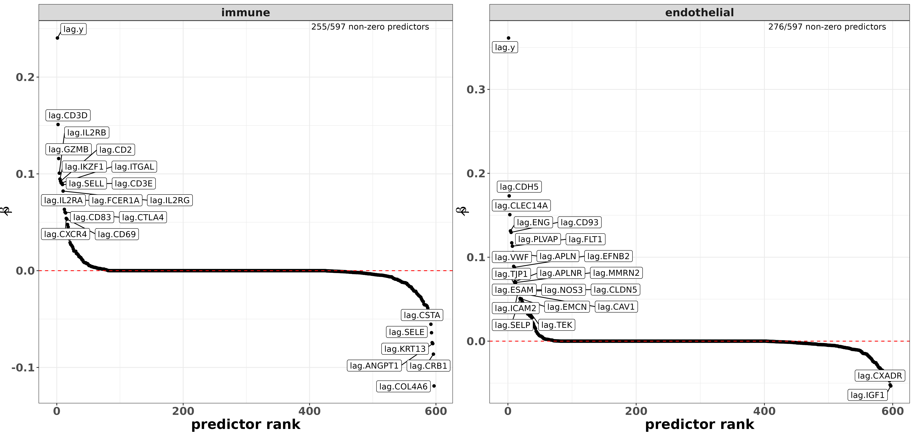
And here, we can peek at a pairsplot to check whether metagene scores are correlated with each other in a sample of 50k cells. For the most part, these plots indicate that the major cell type categories here are fairly exclusive. There are clear examples, however, of cells which have positive metagene scores for multiple cell type classes; we can visually identify examples in the (endothelial,fibroblast), (immune,endothelial),(immune epithelial), (fibroblast, plasma) and (immune,plasma) panels in particular.
pairshat_l1 <- metagene_pairsplot(metagenes_l1, "yhat", nsamples = 5*10**4)
print(pairshat_l1)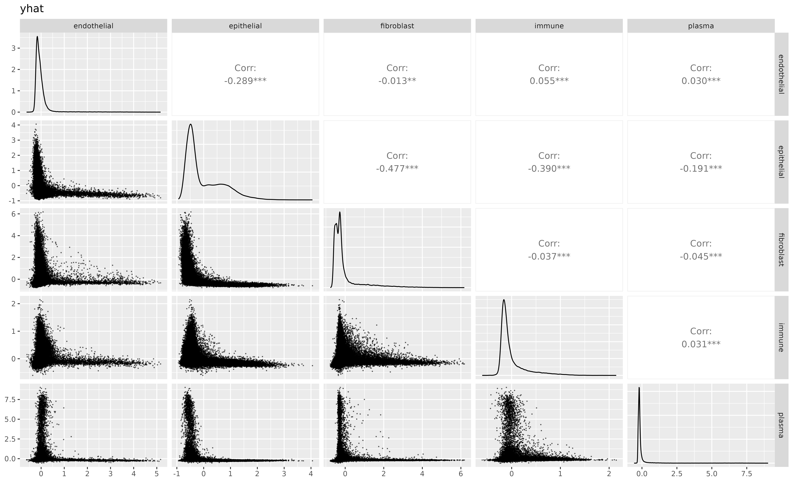
We probably aren’t concerned with this yet. We fit a model like in the previous example, clustering scores into our major cell type categories.
model_l1_unrestricted <-
cluster_metagenes(metagenes = metagenes_l1
,to_model = "yhat"
,discourage_double_positive = list() ## empty: allows double positive cells from other classes to be fit
## ,as long as that cells predicted score is positive
## Example: a cell positive scores for both "epithelial" AND "immune"
## would be used to estimate **both** the epithelial distribution and the immune distribution
)
model_l1_unrestricted$post_probs[,celltype:=best_class]
model_l1_unrestricted$post_probs[best_score < 0.5,celltype:="unknown"]Now, I’ll check the marker gene heatmap. While the marker genes make basic sense, I’m not happy with the some of the some immune markers like “HLA-DRB” and “HLA-DRA”, which are higher expressed than I’d like to see in fibroblast, endothelial, and plasma categories.
Code
fc_l1_unrestricted <-
clusterwise_foldchange_metrics(normed = sem[["RNA"]]@data
,metadata = model_l1_unrestricted$post_probs
,clustercol = "best_class"
)
hm_l1_v1 <- marker_heatmap(fc_l1_unrestricted, extras = c("HLA-DRA", "CD3D", "MS4A1", "HLA-DRB"))
print(hm_l1_v1)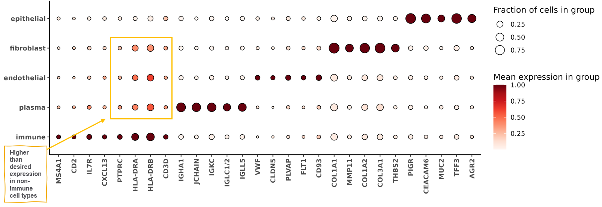
This could be an indication that I’ve ‘lost’ some immune cells by misclassifying them into other categories. Another way I can check this behavior is by looking at the pairsplot again, this time colored by the major cell type classifications.
Cells which are positive for both immune + another category tend to be classified to the other category. We suspect that a large percentage of these double positive cells are in fact immune. Some of the markers for other classes (like immunoglobulin plasma and collagen fibroblast markers) are particularly high expressors that may tend to bleed over cell boundaries, and many of the immune cell related genes are relatively low expressors by comparison.
Code
pairshat_l1_after_unrestricted <- metagene_pairsplot(metagenes_l1, "yhat"
,nsamples = 5*10**4
,obs = model_l1_unrestricted$post_probs[,.(cell_ID, celltype)]
,colorvar = "celltype"
)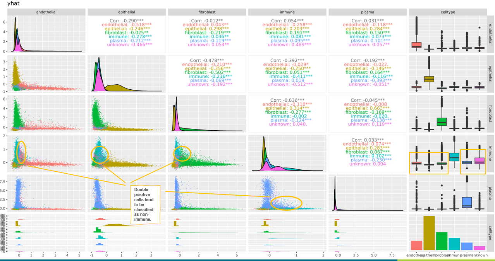
We use the discourage_double_postive argument to exclude immune-positive cells from the training data for other cell type classes. This will have the effect of nudging double-positive cells towards the immune category in our model.
model_l1 <-
cluster_metagenes(metagenes = metagenes_l1
,to_model = "yhat"
,discourage_double_positive = list("endothelial" = "immune" ### don't estimate components for
,"epithelial" = "immune" ### epithelial / endothelial / plasma / fibroblast using cells with positive immune metagene scores
,"fibroblast" = "immune" ###
,"plasma" = c("immune", "fibroblast", "endothelial", "epithelial"))
)
model_l1$post_probs[,celltype:=best_class]
model_l1$post_probs[best_score < 0.5,celltype:="unknown"]We can show that immune cells look objectively better now. The index gene for immune cells, PTPRC (CD45), has gone up in expression for immune, and down for all other cell types. Specificity (measured by fold change) has also increased for immune, and decreased for all other cell types. The number of immune cells we call increases from 17,529 to 25,470.
Code
comp <-
rbindlist(list(fc_l1_unrestricted[gene %in% c("PTPRC")][,typ:="unrestricted"]
,fc_l1[gene %in% c("PTPRC")][,typ:="discouraged_double_pos"]
))
barplot_prop <-
ggplot(comp, aes(y= gene, fill = typ, x = cluster_prop)) +
geom_bar(stat='identity',position=position_dodge2(width=0.8)) +
facet_wrap(~cluster,labeller=label_both) +
theme_bw() +
theme(text=element_text(face='bold',size=14)) +
geom_text(aes(label=paste0("(",scales::comma(ncells),")"), x = cluster_prop + 0.005),position=position_dodge(width=0.8)) +
scale_fill_manual(values = brewer.pal(3,"Dark2"), guide=guide_legend(reverse = TRUE)) +
labs(x = "Proportion of PTPRC+ cells (# of cells assigned to cluster)"
,title="Before vs. After double+ immune scores")
barplot_fc <-
ggplot(comp, aes(y= gene, fill = typ, x = fold_change)) +
geom_bar(stat='identity',position=position_dodge2(width=0.8)) +
facet_wrap(~cluster,labeller=label_both) +
theme_bw() +
theme(text=element_text(face='bold',size=14)) +
scale_fill_manual(values = brewer.pal(3,"Dark2"), guide=guide_legend(reverse = TRUE)) +
scale_x_continuous(n.breaks=10) +
labs(x = "Fold Change for PTPRC")
comp_barplots <-
cowplot::plot_grid(barplot_prop, barplot_fc, nrow=2) +
theme(plot.background = element_rect(fill = 'white',color='white')) +
cowplot::panel_border(remove=TRUE)
print(comp_barplots)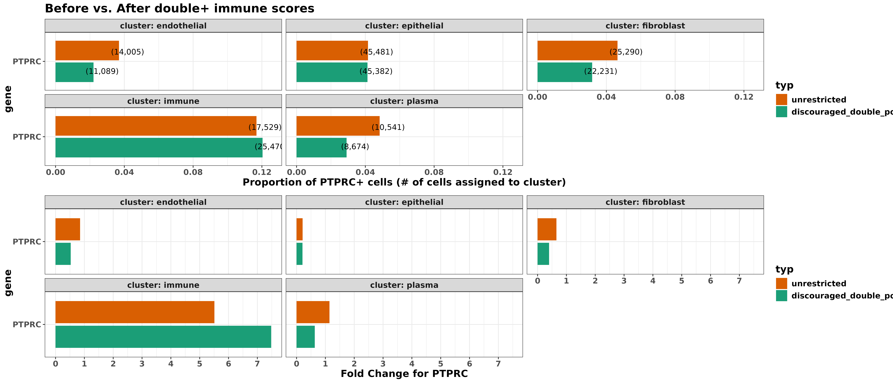
The marker heatmap looks cleaner as well.
Code
fc_l1 <-
clusterwise_foldchange_metrics(normed = sem[["RNA"]]@data
,metadata = model_l1$post_probs
,clustercol = "best_class"
)
hm_l1_v2 <- marker_heatmap(fc_l1
,featsuse = levels(hm_l1_v1$data$gene)
,geneorder = levels(hm_l1_v1$data$gene)
,orient_diagonal = FALSE
)
print(hm_l1_v2)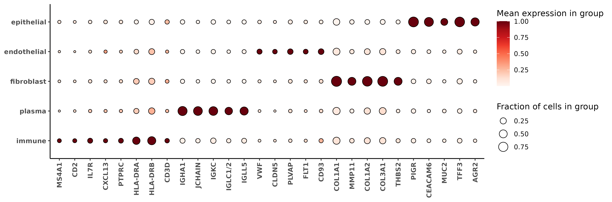
Remaking the pairsplot, we see many of the cells previously highlighted switch to immune.
Code
pairshat_l1_after <- metagene_pairsplot(metagenes_l1, "yhat"
,nsamples = 5*10**4
,obs = model_l1$post_probs[,.(cell_ID, celltype)]
,colorvar = "celltype"
)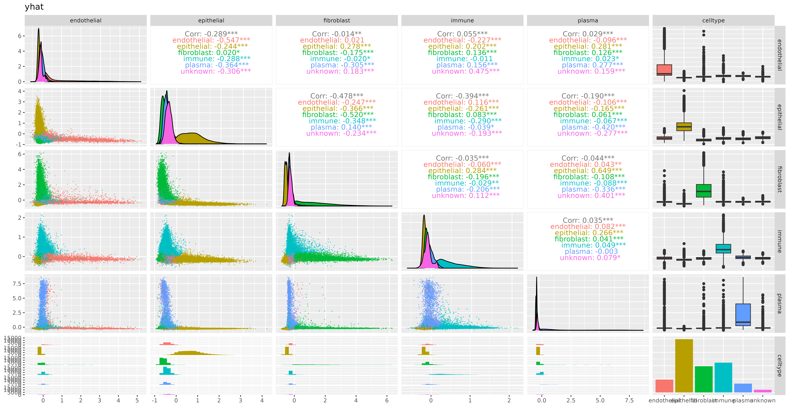
4.2.2 Level 2: Immune cell classification
Now let’s classify our immune cells. We hope to find some of these cell types: [tcell,bcell,macrophage,neutrophil,mast,monocyte,cDC,pDC].
The markerslist_l2immune dataset follows the previously discussed format with an index gene and predictors for each cell type.
data("markerslist_l2immune")
str(markerslist_l2immune)List of 8
$ tcell :List of 3
..$ index_marker: chr "CD3D"
..$ predictors : chr [1:443] "CD3E" "CD3G" "CD4" "CD8A" ...
..$ signs : num [1:443] 1 1 1 1 1 1 1 1 1 1 ...
$ bcell :List of 3
..$ index_marker: chr "MS4A1"
..$ predictors : chr [1:443] "CD19" "CD20" "CD79A" "CD79B" ...
..$ signs : num [1:443] 1 1 1 1 1 1 1 1 1 1 ...
$ macrophage:List of 3
..$ index_marker: chr "CD68"
..$ predictors : chr [1:443] "AIF1" "MRC1" "CD163" "C1QA" ...
..$ signs : num [1:443] 1 1 1 1 1 1 1 1 1 1 ...
$ neutrophil:List of 3
..$ index_marker: chr "CSF3R"
..$ predictors : chr [1:443] "S100A8" "S100A9" "S100A12" "ELANE" ...
..$ signs : num [1:443] 1 1 1 1 1 1 1 1 1 1 ...
$ mast :List of 3
..$ index_marker: chr "KIT"
..$ predictors : chr [1:443] "TPSAB1/2" "TPSAB1" "TPSB2" "CPA3" ...
..$ signs : num [1:443] 1 1 1 1 1 1 1 1 1 1 ...
$ monocyte :List of 3
..$ index_marker: chr "CD14"
..$ predictors : chr [1:443] "LYZ" "S100A8" "S100A9" "FCN1" ...
..$ signs : num [1:443] 1 1 1 1 1 1 1 1 1 1 ...
$ cDC :List of 3
..$ index_marker: chr "ITGAX"
..$ predictors : chr [1:443] "HLA-DRA" "HLA-DRB1" "CD1C" "CD1A" ...
..$ signs : num [1:443] 1 1 1 1 1 1 1 1 1 1 ...
$ pDC :List of 3
..$ index_marker: chr "CLEC4C"
..$ predictors : chr [1:443] "LILRA4" "TCF4" "IRF7" "IRF8" ...
..$ signs : num [1:443] 1 1 1 1 1 1 1 1 1 1 ...We fit the metagene scores and cluster like before, however this time we can pass in the posterior probability from our as a weight using the prior_level_weights argument and prior_prob_level arguments. This allows us to use information from all cells, but account for our uncertainty that they belong to any of the immune cell types we wish to identify.
metagenes_l2 <-
fit_metagene_scores(markerslist_l2immune
,counts_matrix = Matrix::t(sem[["RNA"]]@counts)
,adjacency_matrix = as(sem@graphs$umapgrph, "CsparseMatrix")
,prior_level_weights = model_l1$post_probs$immune
)
model_l2 <-
cluster_metagenes(metagenes = metagenes_l2
,to_model = "yhat"
,prior_prob_level = model_l1$post_probs$immune
)The posterior probabilities from model_l2$post_probs already account for the probability a cell is ‘immune’. We can join these data together with our first high-level model, and label cells with low probability for any category as “unknown”. Then we’ll take a look at the marker heatmap. I’m pretty happy with this for the most part; the marker genes in the heatmap line up well with the cell types we assigned them to in markerslist_l2immune. However, I do see that the mast cells have some enrichment in tcell marker genes (highlighted below in the heatmap).
probs <- merge(model_l1$post_probs, model_l2$post_probs, suffixes=c("_l1", "_l2"), by = "cell_ID")
probs[,`:=`(celltype=best_class_l2, best_score=best_score_l2)]
probs[best_score_l2 < 0.5,`:=`(celltype=best_class_l1, best_score=best_score_l1)]
probs[best_class_l1 =="immune",`:=`(celltype=best_class_l2, best_score = best_score_l2)]
probs[best_score_l1 < 0.5,celltype:="unknown"]
fc_l2 <-
clusterwise_foldchange_metrics(normed = sem[["RNA"]]@data
,metadata = probs
,clustercol = "celltype"
)
hm_l2 <- smiSmooth::marker_heatmap(fc_l2, extras =c("S100A8", "S100A9", "CD68", "LILRA4", "CLEC4C", "CD14", "CLEC9A"))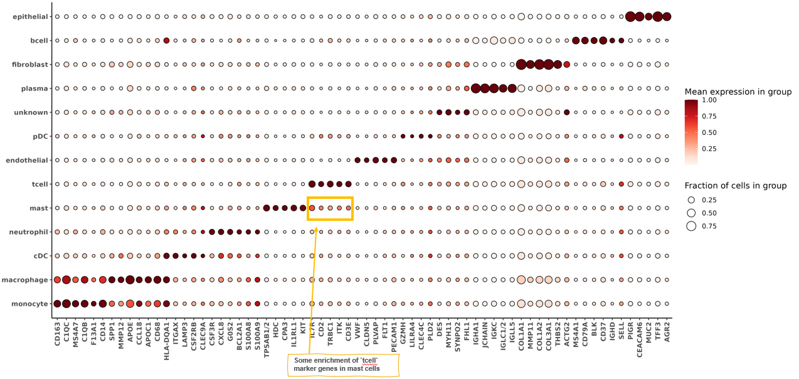
I refit the model again, this time “discouraging double positives” for tcell likely cells to be classified as mast.
model_l2_v2 <-
cluster_metagenes(metagenes = metagenes_l2
,to_model = "yhat"
,prior_prob_level = model_l1$post_probs$immune
,discourage_double_positive = list("mast" = c("tcell"))
)This ends up looking a lot better, both visually in terms of the marker heatmap, as well as the actual percentages and fold change of CD3 expression in mast and tcell.
Code
probs <- merge(model_l1$post_probs, model_l2_v2$post_probs, suffixes=c("_l1", "_l2"), by = "cell_ID")
probs[,`:=`(celltype=best_class_l2, best_score=best_score_l2)]
probs[best_score_l2 < 0.5,`:=`(celltype=best_class_l1, best_score=best_score_l1)]
probs[best_class_l1 =="immune",`:=`(celltype=best_class_l2, best_score = best_score_l2)]
probs[best_score_l1 < 0.5,celltype:="unknown"]
probs[,.N,by=celltype] celltype N
<char> <int>
1: epithelial 45126
2: fibroblast 22111
3: mast 1452
4: endothelial 10773
5: monocyte 4672
6: tcell 6910
7: bcell 3255
8: macrophage 3761
9: neutrophil 2059
10: plasma 7518
11: pDC 1597
12: unknown 2366
13: cDC 1246Code
fc_l2_v2 <-
clusterwise_foldchange_metrics(normed = sem[["RNA"]]@data
,metadata = probs
,clustercol = "celltype"
)
|
| | 0%
|
|===== | 8%
|
|=========== | 15%
|
|================ | 23%
|
|====================== | 31%
|
|=========================== | 38%
|
|================================ | 46%
|
|====================================== | 54%
|
|=========================================== | 62%
|
|================================================ | 69%
|
|====================================================== | 77%
|
|=========================================================== | 85%
|
|================================================================= | 92%
|
|======================================================================| 100%Code
marker_heatmap(fc_l2_v2)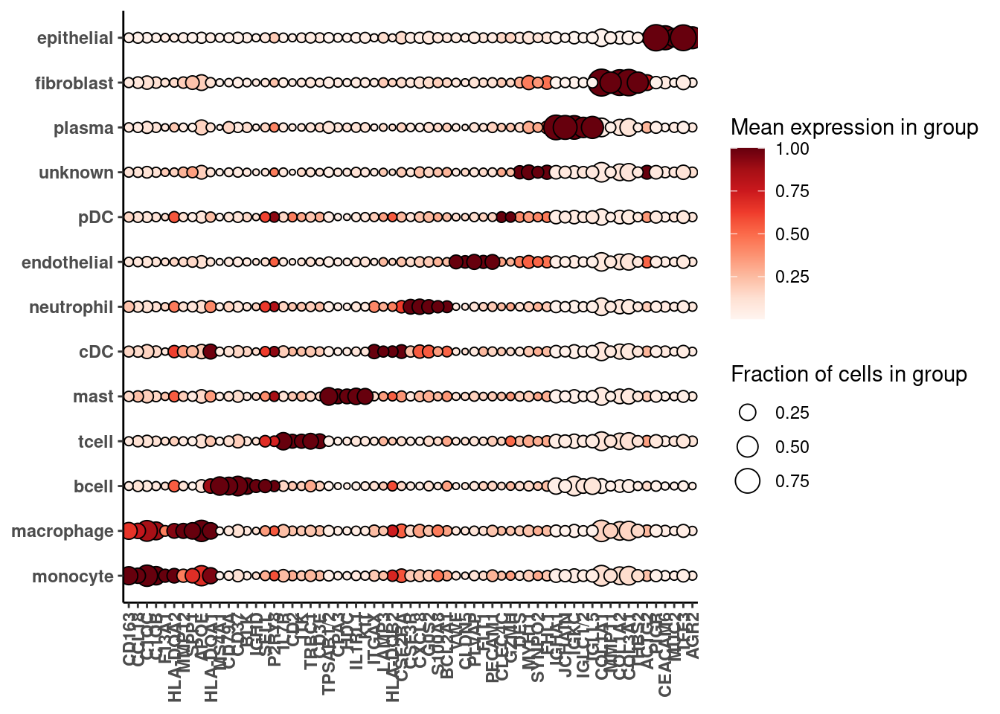
Code
hm_l2_v2 <- smiSmooth::marker_heatmap(fc_l2_v2, extras =c("S100A8", "S100A9", "CD68", "LILRA4", "CLEC4C", "CD14", "CLEC9A"))
print(hm_l2_v2)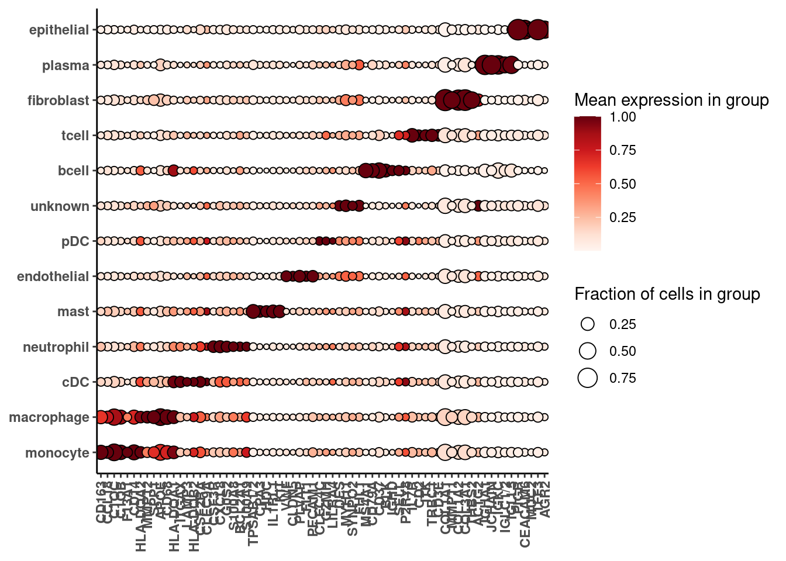
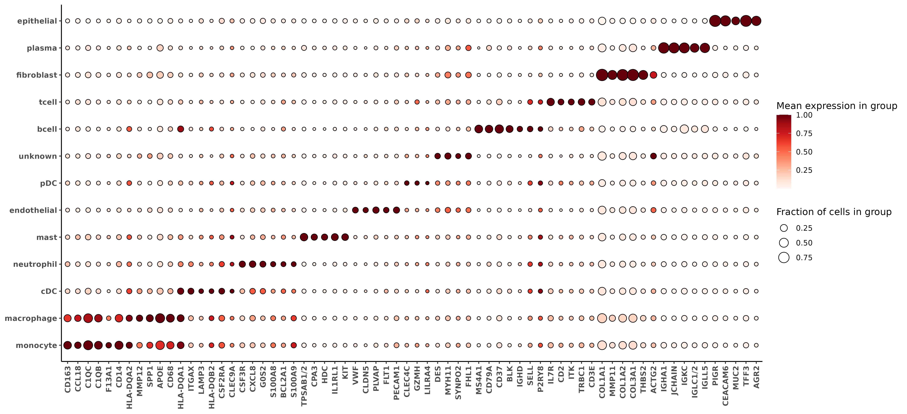
Code
comp <-
rbindlist(list(fc_l2[gene %in% c("CD3E", "CD3D", "CD3G")][cluster %in% c("tcell", "mast")][,typ:="v1_before"]
,fc_l2_v2[gene %in% c("CD3E", "CD3D", "CD3G")][cluster %in% c("tcell", "mast")][,typ:="v2_after"]
))
barplot_prop <-
ggplot(comp, aes(y= gene, fill = typ, x = cluster_prop)) +
geom_bar(stat='identity',position=position_dodge(width=0.8)) +
facet_wrap(~cluster,labeller=label_both) +
theme_bw() +
theme(text=element_text(face='bold',size=14)) +
geom_text(aes(label=paste0("(",scales::comma(ncells),")"), x = cluster_prop + 0.005),position=position_dodge(width=0.8)) +
scale_fill_manual(values = brewer.pal(3,"Dark2"), guide=guide_legend(reverse = TRUE)) +
labs(x = "Proportion of CD3+ cells (# of cells assigned to cluster)"
,title="Before vs. After refining double+ tcell scores in mast cell model")
barplot_fc <-
ggplot(comp, aes(y= gene, fill = typ, x = fold_change)) +
geom_bar(stat='identity',position=position_dodge(width=0.8)) +
facet_wrap(~cluster,labeller=label_both) +
theme_bw() +
theme(text=element_text(face='bold',size=14)) +
scale_fill_manual(values = brewer.pal(3,"Dark2"), guide=guide_legend(reverse = TRUE)
) +
scale_x_continuous(n.breaks=10) +
labs(x = "Fold Change for CD3 (# of cells assigned to cluster)")
comp_barplots <-
cowplot::plot_grid(barplot_prop, barplot_fc, nrow=2) +
theme(plot.background = element_rect(fill = 'white',color='white')) +
cowplot::panel_border(remove=TRUE)
print(comp_barplots)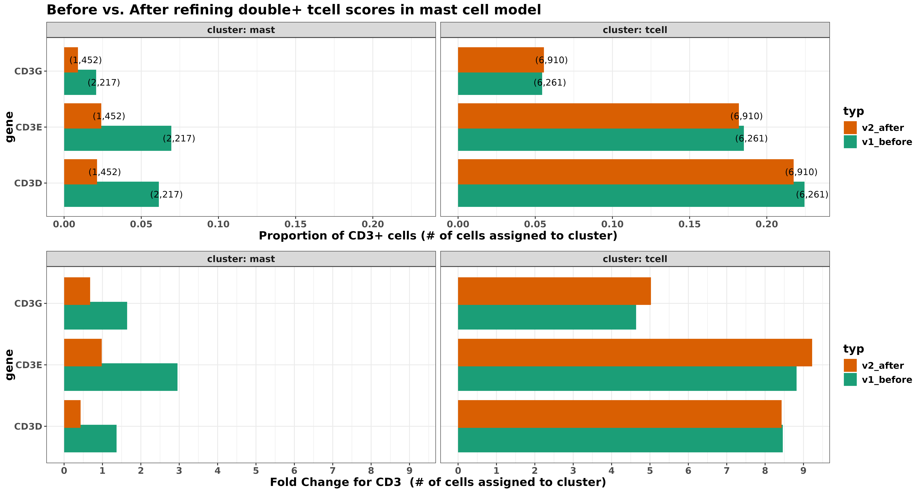
Here’s a spatial plot of the cell types we’ve called so far. We could stop here, or continue in the same manner for subclassifying any other cell types.
met <- merge(data.table(sem@meta.data), probs[,.(celltype, cell_ID)])
colorpal <- c('#F0A0FF','#E0FF66','#C20088','#00998F','#426600','#005C31','#808080','#94FFB5','#003380','#191919','#990000','#0075DC','#FFA405')
names(colorpal) <- sort(unique(met[["celltype"]]))
xyplist <-
lapply(split(met, by="portion"), function(xx){
smiSmooth:::xyplot(cluster_column = "celltype", metadata = xx, ptsize = 0.01, cls = colorpal) + coord_fixed()
})
cowplot::plot_grid(plotlist=xyplist)
5 Conclusion
The basic framework we’ll used for both scenarios can be described in a few basic steps (we can mention these now, and discuss more throughout our examples.)
- Defining sets of genes we expect might be expressed for each cell type based on prior data or biology (literature or a reference dataset).
- Can be defined based on a reference dataset, or literature.
- Expect that some (but not all)
Constructing metagene scores for that celltype based on the genes specified in (1).
Clustering metagene scores from step into and classifying cells.
Ability to flexibly encode our assumptions based on prior knowledge of the biology and the literature.
Make cell type classification robust to common challenges faced with SRT data. – variables producing metagene scores act as ‘instruments’. In general uncorrelated with segmentation error in a particular marker gene – flexibly model cells which are double-positive for multiple categories and re-assign them
Ability to flexibly encode our assumptions based on prior knowledge of the biology and the literature.
Make cell type classification robust to common challenges faced with SRT data. – variables producing metagene scores act as ‘instruments’. In general uncorrelated with segmentation error in a particular marker gene – flexibly model cells which are double-positive for multiple categories and re-assign them
Identify a set of genes expected to be expressed in the celltypes you wish to identify (i.e., based on the literature), and an ‘index’ gene, typically a canonical marker relatively specific to the celltype. Example:
Construct a ‘metagene score’ for each cell type by regressing the index gene against all other genes, generating a ‘predicted index gene’.
We may define a full regression model as
Marker genes are genes that are expressed primarily within a single cell type, and are often used to delineate and label clusters during cell typing in a scRNAseq analysis.
- Define for each cell type a list of genes that we might expect to be upregulated.
- These can be curated and defined by the user based on prior knowledge, literature, or external datasets.
This framework is more flexible than usign a reference profile in terms of robust to platform effects or deviations in a reference profile. By defining multiple upregulated genes and restricting the direction of their regression coefficients, we’ve implicitly imposed an assumption of positive covariance between these markers within the corresponding celltype class.
References
Aragam, Bryon, Chen Dan, Eric P Xing, and Pradeep Ravikumar. 2020. “Identifiability of Nonparametric Mixture Models and Bayes Optimal Clustering.”
Slawski, Martin, and Matthias Hein. 2013. “Non-negative least squares for high-dimensional linear models: Consistency and sparse recovery without regularization.” Electronic Journal of Statistics 7 (none): 3004–56. https://doi.org/10.1214/13-EJS868.